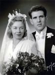

Åke Oskar Strömberg
Blev 86 år.
| Född: | 1916-10-18 Kungsholms fs, Stockholms stad. [1] |
|---|
| Änkling: | 1961-09-28 Bildhuggarvägen 16, Enskede fs, Stockholms stad. [2] |
|---|
| Levde: | 1971 Isjaktsgr 35, nb v, Hägersten, Brännkyrka fs, Stockholms stad. [3] |
|---|
| Död: | 2003-08-26 Hägersten, Brännkyrka fs, Stockholms stad. [1] |
|---|
| Vigsel: | 1943-12-31 Stockholms stad. [2] |
|---|
| Barn: |
|---|
| Bert Åke Strömberg (1945 - ) |
Personhistoria
| Årtal | Ålder | Händelse |
|---|
| 1916 |
|
Födelse 1916-10-18 Kungsholms fs, Stockholms stad [1] |
| 1919 |
2 år |
Makan Mabel Bernhild Brudell föds 1919-01-10 Jörns fs, Jörns sn [4] |
| 1943 |
27 år |
Vigsel Mabel Bernhild Brudell 1943-12-31 Stockholms stad [2] |
| 1945 |
28 år |
Sonen Bert Åke Strömberg föds 1945-01-06 Brännkyrka fs, Stockholms stad [3] |
| 1961 |
44 år |
Änkling 1961-09-28 Bildhuggarvägen 16, Enskede fs, Stockholms stad [2] |
| 1961 |
44 år |
Makan Mabel Bernhild Brudell dör 1961-09-28 Bildhuggarvägen 16, Enskede fs, Stockholms stad [2] |
| 1971 |
|
Levde 1971 Isjaktsgr 35, nb v, Hägersten, Brännkyrka fs, Stockholms stad [3] |
| 2003 |
86 år |
Död 2003-08-26 Hägersten, Brännkyrka fs, Stockholms stad [1] |
Källor
| [1] | man91 / RFV 06 |
| |
| | |
| [2] | DB, PA / DOR 61 |
| |
| | |
| [3] | Mtl Stockholms stad och län 1971 |
| |
| | |
| [4] | Jörn C:6 (1918-1920) nr. 9/1919 s.55 k.2/7 |
| |
|
|  |
| 1943-12-31. Vigsel i Stockholms stad |
|
{kind=link}